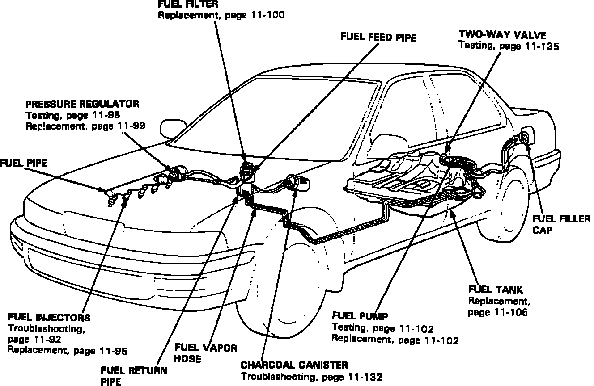
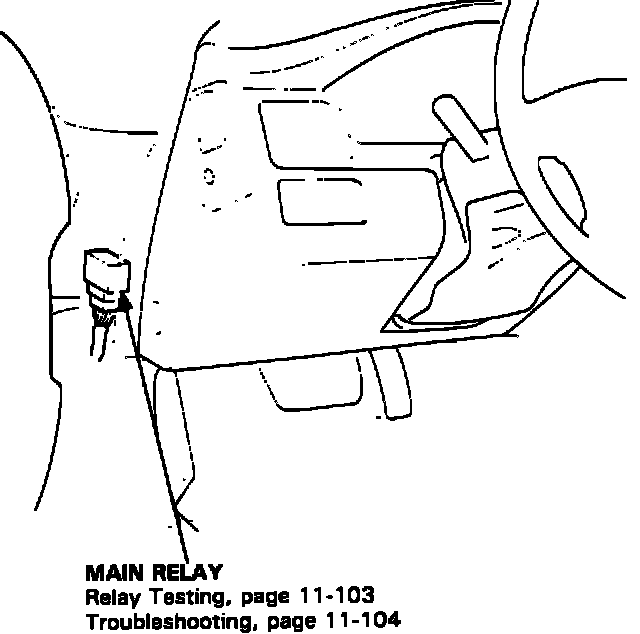

Fuel System Components
Fuel Component Locations:

FUEL FILTER
The Fuel Filter is located in the engine compartment, on the right side of the firewall.
FUEL INJECTORS
The Fuel Injectors are located on the intake manifold of the engine. They are mounted between the fuel rail and the intake manifold.
FUEL PRESSURE REGULATOR
The Fuel Pressure Regulator is mounted on the fuel rail, near the fuel injectors.
FUEL PUMP
The Fuel Pump is located inside the fuel tank. It is near the fuel level sending unit on top of the fuel tank.
FUEL RAIL (PIPE)
The Fuel Rail is located on the intake manifold of the engine. It is mounted to the intake manifold near the head and has the fuel injectors attached along its side.
FUEL LINES
The Fuel Lines are located underneath the vehicle along the left side, entering the engine compartment from the lower left. From there they run across the top of the firewall and attach to the engine.
FUEL TANK
The Fuel Tank is located under the rear of the vehicle, between the rear wheels. The Fuel Tank filler port is located in the body panel above the left rear wheel.
Fuel Pump Relay:

FUEL PUMP MAIN RELAY
The Fuel Pump Main Relay is located under the dashboard area. It is to the left of the steering wheel, mounted on the back of the fuse panel.